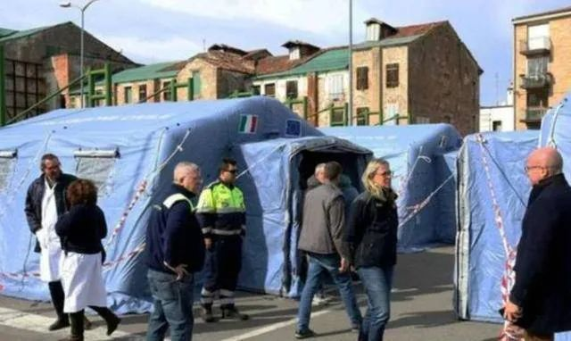
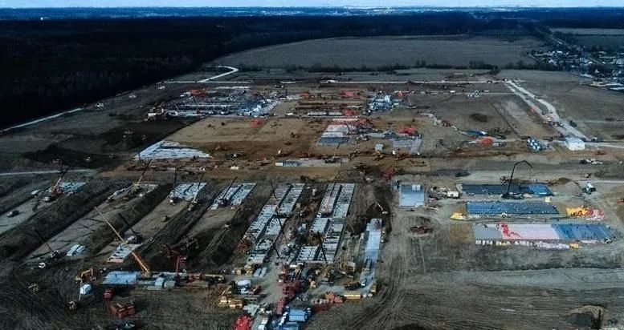
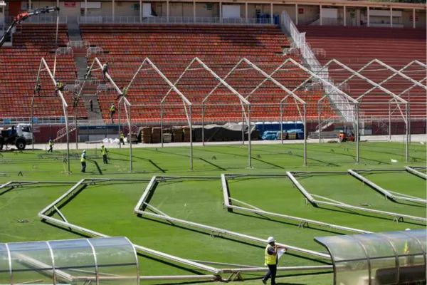

网友都在祝它早日闭院，“方舱医院”究竟是什么？
原文链接 备份链接 跳广场舞、练瑜伽、打太极、复习备考……每天我们都能从社交媒体上了解到武汉“方舱医院”内患者们的日常生活。这些看似平常的活动，却为紧张的抗疫工作带来了一丝活力与鼓舞。 2月3日晚，武汉市宣布将在武汉国际会展中心、洪山体育 …

纽约州计划在纽约市曼哈顿西区的贾维茨会议中心建造一所方舱医院，大约能提供1000个床位。加州和华盛顿州也会建设类似的医院。
文 | 刘朝晖
中国的方舱医院已经休舱，意大利、西班牙、美国、俄罗斯、伊朗等许多国家结合本国国情和当地实际，正在或即将兴建方舱医院。各国的方舱医院都弄得怎么样了？能应付越来越严重的疫情吗？我们不妨来看一看，他们从中国经验中学到了几分精髓。
美国：水上陆上双管齐下
美国国防部长马克·埃斯珀3月17日曾表示，美国18个州已经动用了国民警卫队，野战医院已经准备就绪。3月23日他在新闻发布会上说，美国海军的“仁慈”号医院船将开赴洛杉矶，未来几周内，美国海军的“舒适”号医院船也将前往纽约。埃斯珀还表示，美国国防部已经向5支野战医院部队和相关的远征医疗队下达“准备部署”的命令，本周开始向美国多地进行部署。
美国参谋长联席会议主席马克·米利表示，首批部署在西雅图和纽约的两家野战医院将在“72小时或更短时间内”完工。每家医院能够提供248张病床，其中48张是ICU病床，每家医院还将配备11台呼吸机。

3月22日，“仁慈”号医院船正在装载物资，准备支援美国西海岸抗击新冠肺炎疫情
不过有点尴尬的是，据媒体透露，美军的野战医院的设计，并没有传染病专家的参与，主要进行创伤性治疗，不具备救治新冠患者的条件。美军紧急调两艘医疗船和搭建18座野战方舱医院，是缓解现有医院床位紧张的压力的应急办法。

当地时间3月19日，美国俄勒冈州国民警卫队在俄勒冈州博览会场建设“方舱医院”，专用于收治新冠肺炎病患，方舱医院内设置折叠椅和行军床 图 | 看看新闻截屏
美国总统特朗普3月22日在白宫记者会上说，他已经要求联邦紧急措施署在纽约州、加州和华盛顿州设立12个“方舱医院”，收治新冠肺炎患者。加州设立8个紧急医疗站，床位2000张；纽约州和华盛顿州共计设立11个紧急医疗站，床位2000张。
此外，纽约州计划在纽约市曼哈顿西区的贾维茨会议中心建造一所方舱医院，大约能提供1000个床位。加州和华盛顿州也会建设类似的医院。
意大利：帐篷病房恐怕不够
3月20日，意大利第一个方舱医院在疫情严重的北部伦巴第大区克雷莫纳市投入使用。这座方舱医院由15个帐篷组成，位于克雷莫纳医院的停车场，能提供60张病床，包括8张重症护理病床。
这种用充气帐篷临时搭设而成“方舱医院”，一天之内就能搭设完毕，在帐篷内引入各种治疗设备后，这些临时医院便可交付使用。帐篷内具备一定的保温功能，内部还设有用电插座，一般一个帐篷内可以容纳4个病人同时隔离，医护人员出入帐篷前都会进行消毒工作。


意大利的充气帐篷方舱医院
此外，一艘由渡轮改装而成的轮船医院已交付给意大利利古里亚大区政府，以供在新冠肺炎疫情期间收治病人使用。该船被改造成一个拥有400张床位的轮船医院，主要用于收治新冠病毒感染者和已经临床治愈出院，但还需要隔离观察一段时间才能回家的患者。
改造完成的海上方舱医院
然而，对于意大利这个疫情最为严重的欧洲国家来说，这种充气帐篷方舱医院还远远不能满足需求。近日，意大利卫生部研究与创新司司长乔瓦尼莱奥纳尔迪在接受央视采访时表示：“我们正在米兰会展区旁搭建方舱医院，那里有500张重症监护床位，这就需要相应的设备，例如供氧设备就是主要紧缺的设备之一。中方的援助能使我们迅速有力地应对这个紧急状况。”
西班牙：5500床位应对疫情
据西班牙媒体报道，西班牙首都马德里大型医院的重症监护室（ICU）已达到极限，近700人因新冠病毒感染而入住ICU。为解决这种局面，西班牙人经过18个小时的努力，将位于马德里郊外的、面积24万平方米的马德里会展中心改造成了方舱医院，已经开始接收患者。同时，也会收留无家可归的无症状感染者。


马德里会展中心已改造成方舱医院
包括500个重症监护床位在内，这座方舱医院设置了约5500个床位，以应对未来几天预计会激增的病例。医院内部空空荡荡，床位之间连隔板都没有。两个床位之间的距离比较远，床上只有简单基本的床上用具，每张床的旁边都有一个氧气瓶。
西班牙的“方舱”医院虽然简单了点，但是这样的医院或为疫情带来转机。
伊朗：公交车也能改成医院
经过6天的改造，伊朗政府已将全国占地面积最大的购物商场Iran Mall改造为方舱医院，以收治更多的新冠肺炎患者。当地时间3月22日，该医院已正式移交伊朗卫生部，并开始接收新冠肺炎病患。

伊朗方舱医院已经开始接收患者
由于不同的地理形势及人口分布，伊朗方舱医院“因地制宜”地发展出了自己的特色。有固定场馆改造的，也有公交车改造的，还有用帐篷搭建的……无论什么形态的方舱医院，都是防控疫情的重要阵地，帮助更多的患者得到及时地救治。
伊朗用公交车改造的方舱医院
2月29日，中国红十字会志愿专家团队来到了伊朗，他们带去了中国捐赠的试剂盒和呼吸机等物资设备。此外，中国政府、企业、使馆和普通百姓，通过不同渠道捐赠了呼吸机、试剂盒、口罩、防护服和护目镜等，受到伊朗官员和老百姓的欢迎。
俄罗斯：“小汤山”式临时医院正在建设
据俄罗斯媒体的报道，俄罗斯正在莫斯科市远郊建设此次疫情中的首个方舱医院。据悉，这个专门的传染病医院位于新莫斯科行政区，医院选址远离居民区，与最近的一栋住宅楼相距250米，医院设有500个床位，其中250个为重症监护病床。
参与该项目的莫斯科城建政策与建设集团公司3月13日在其网站发布消息说，这一医院名为“新冠疫情遏制中心”，位于莫斯科市西南方向约60公里处。据悉，这所医院将由模块化舱室、多层夹芯板等快速拼装构件建造，目前其建设指挥部24小时工作，施工场地的地质勘测正在收尾，专业人员已着手铺设通往医院的道路。关于这所医院何时建成，目前尚无消息。

莫斯科方舱医院正在建设
根据设计，该方舱医院总面积约为43万平方米，内设500张病床。院区内设有外来人员接纳区、诊断室、化验室、治疗室、抢救室、手术室和病房等。莫斯科市副市长波奇卡列娃3月12日表示，这所医院的建设参考了中国同行和莫斯科市建造类似设施的经验，医院将配备先进诊疗设备，为可能到来的患者提供具有高度专业水平的救治。
此外，俄罗斯第二所方舱医院在哈巴罗夫斯克建造，预计在12周内完工。
更多国家因地制宜增加床位
近日，由于奥地利新型冠状病毒感染人数不断增加，奥地利首都维也纳正在将该市的一座大型展览馆——维也纳展览馆改造成为一座临时性的方舱医院。据当地媒体介绍，该方舱医院将提供880张床位，根据计划，上周开始收治轻度病症患者。

维也纳展览馆被改造成为临时性的方舱医院
以色列国防军上周开始建立三处临时救护中心，类似“方舱医院”，共有3000个床位，用来接纳疑似病例轻症患者居住和治疗，以便为重症患者腾出医院空间。以色列国防部长本内特3月13日表示，这些设施建设速度将很快，一周内可以全部完成并开放。
为应对日益严峻的防疫形势，巴西圣保罗州和里约热内卢州已经开始着手建造方舱医院。其中圣保罗市将建造两所方舱医院，共设置2000个床位。里约热内卢州也将兴建4所方舱医院，共设置1100个床位。这些方舱医院将利用大型体育场馆等设施改建。

3月23日在巴西圣保罗市帕卡恩布体育场拍摄的方舱医院施工现场
除此之外，阿根廷国防部也开始组织力量在位于首都附近的一家部队医院里增建方舱医院，以提供更多的床位，收治更多的患者。据了解，该医院可分为治疗、住院和后勤保障三个板块，其中医疗舱由分诊、手术、超声影像、生化检验和消毒五个模块构成。当地政府承诺，这些“方舱”3月24日完成搭建。
资料来源：央视军事、新华社、环球网、海外网、新浪等


· 我在海外 | 美国社区还基本正常，我不回去给中国造成负担
新民周刊所有平台稿件， 未经正式授权
一律不得转载、出版、改编或进行
与新民周刊版权相关的其他行为，违者必究


原文链接 备份链接 跳广场舞、练瑜伽、打太极、复习备考……每天我们都能从社交媒体上了解到武汉“方舱医院”内患者们的日常生活。这些看似平常的活动，却为紧张的抗疫工作带来了一丝活力与鼓舞。 2月3日晚，武汉市宣布将在武汉国际会展中心、洪山体育 …
原文链接 备份链接 澎湃新闻记者 高宇婷 马作鹏 实习生 李彤 3月6日，武汉的新冠肺炎新增确诊病例自1月27日以来首度降至两位数，距离武汉封城，过去了44天。 根据湖北省卫健委3月7日发布的数据，截至3月6日24时，湖北新增新冠肺炎确诊 …
原文链接 备份链接 “ - 疫 情 之 下 - 由于医疗资源集中在新冠的防治上，他们求医问药的每一步，在这场劫难中都显得异常艰辛。 ” 1 2月4日，正是疫情暴发期。 各个医院门诊挤满了发热患者，医院病房依旧一床难求。我服从医院安排，被调 …
原文链接 备份链接 医院呼吁，并不危急的其他疾病患者，可以通过线上咨询、问诊，暂缓前往医院；但该看的病还是要去医院看，千万不要耽误治疗。 记者 | 周 洁 新冠肺炎疫情期间，其他疾病的病人怎么看病？记者连线上海各大医院发现，恢复门诊近一个 …
原文链接 备份链接 从2月7日到现在，一方面大家的活动越来越丰富，另一方面由于轻症患者比较多，人们病情都慢慢恢复。所以，我看到每个人脸上的笑容都变多了。 口述 | 余 毅 整理 | 王仲昀 这一个月终于要过去了。 2月21日上午，在等待几 …